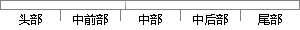

主要与服务器交互，每次操作都会调用接口。
片段位置图

相似结果|
相似片段 1：，都会调用／api／checkserial．html接口，通过将重新生成的机器唯一标识码发送到服务器进行匹配验证，来达到检查计算机是否可用的目的。前台应用在每次启动时，还会调用／api／get ． 接口，如果返回的版_version html本号比当前版本号高，则会进行更新操作。
相似片段 2：要求服务器端的一个独立事务。另外，实体EJB巨的每次操作都会要求EJB容器/服务器同步EJB和后台数据存储器中的数据。图4-8用户和实体EJB交互图无论是否采用本地接口，图4-8的交互过程不能保证数据
|
※ 片段修改建议 ※
近似词参考：- 主要：首要 重要
- 操作：操纵
- 都会：城市 都邑 都市
- 调用：挪用
系统自动生成语句：首要与服务器交互，每次操纵城市挪用接口。
注：本片段修改建议为系统自动生成，仅供参考。